Operating Documentation
Direction 5670006, Rev# 1
Discovery MR750w GEM Service Methods
Module Version 2.0, Version Date 10/14/11
Operating Documentation |
| Required Persons | Preliminary Reqs | Procedure | Finalization |
|---|---|---|---|
| 1 | Not Applicable | 2 mins | 1 min |
The two replacement procedures are prepared according to the site condition.
The one is for the site that has enough clearance of right side cover removal , the other is for the site that does not have enough clearance of right side cover removal.
If clearance of right side of PGR cabinet is over 24 inch (610mm), refer to Replacement of RF Body or Head Transmit Cable with Removing Side Cover
If clearance of right side of PGR cabinet is less than 24 inch (610mm), refer to Replacement of RF Body or Head Transmit Cable without Removing Side Cover
| NOTE: | The minimum clearance of right side of PGR cabinet is
15 inch (381mm) as shown in Illustration 1. Illustration 1: Service Clearance of PGR Cabinet 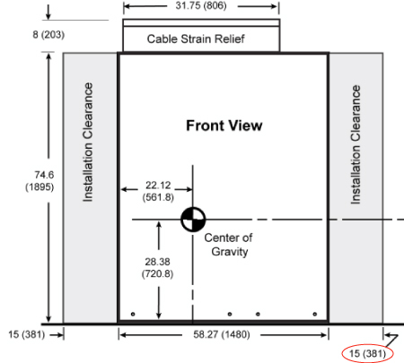 |
| Item | Qty | Effectivity | Part# | Manufacturer | |
|---|---|---|---|---|---|
| Service Platform | 1 | - | 5155291-2 | - | |
| Adjustable Wrench | 1 | - | - | - | |
| Phillips-Head Screwdriver (+) | 1 | - | - | - | |
| Item | Qty | Effectivity | Part# | Manufacturer |
|---|---|---|---|---|
| Tie-Wrap | 2 | - | - | - |
| Item | Qty | Effectivity | Part# | Manufacturer | |
|---|---|---|---|---|---|
| RF Body Transmit Cable | 1 | - | See FRU Manual | - | |
| RF Head Transmit Cable | 1 | - | See FRU Manual | - | |
| ||||
| possible personal injury or equipment damage! | ||||
| the module could fall when using the lift tool. | ||||
| before putting weight on the hoist chain, be sure that the links are aligned properly. this will help keep the chain from binding up, or becoming kinked, which is nearly impossible to correct when the chain is under tension. |
| Condition | Reference | Effectivity |
|---|---|---|
The power in the cabinet needs to be off. Perform Lockout / Tagout for PGR PDU / Gradient Subsystem. | - | - |
The power in the cabinet needs to be off. Perform Lockout / Tagout for PGR PDU / Gradient Subsystem.
Using an adjustable wrench, disconnect the failed RF Body or Head Transmit Cable from the front of the RF Amplifier, as shown in Illustration 2.
Illustration 2: RF Amplifier Location in PGR Cabinet
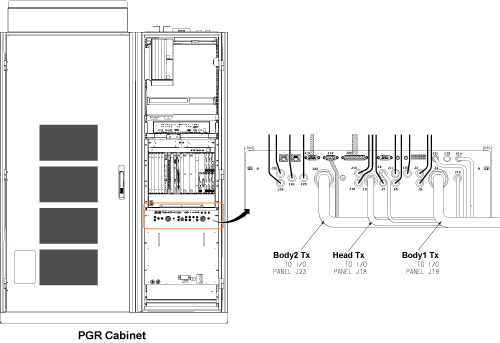
Remove right side cover to access to the RF transmit cables.
Illustration 3: Remove right side cover

From the right side opening, withdraw the defective cable and label the cable as “defective”.
Illustration 4: Withdraw the defective cable
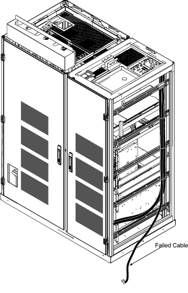
Set up the Service Platform in front of the PGR Cabinet.
| NOTE: | Verify that safety rails are in place prior to using the Service Platform. |
Using an adjustable wrench, remove body and head transmission lines from the plate at the top of the PGR Cabinet (shown in Illustration 5), and place out of the way.
Remove plate shown in Illustration 5 by loosening 4 thumb screws.
Disconnect the defective cable from Bulkhead IF Connector.
Illustration 5: Plate Location on PGR Cabinet and Body and Head Transmission Lines
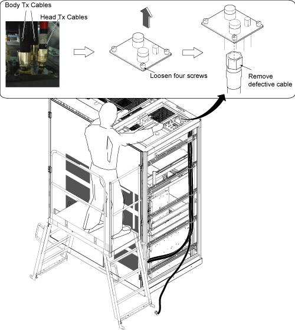
Cut the tie wraps from lower position and remove the failed cable.
Illustration 6: Defective Cable Removal
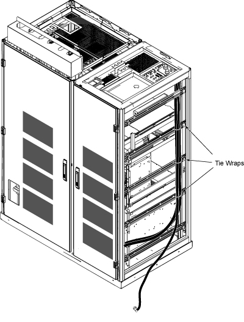
Connect RF Transmit cables to the bottom of cabinet IF plate, restore cabinet IF on the top of the cabinet, and restore Tx Cables to the top of the cabinet.
Remove Service Platform.
Fix the RF cable by tie wraps with the other RF cables at three locations.
Route the cable with 90 degree connector into cabinet from the right side opening to RF Amp front panel.
Reinstall the right side cover.
Restore RF Amp cable.
Restore the power using Lockout / Tagout of PGR PDU / Gradient Subsystem.
Go to Finalization ( Finalization, Step 1).
The power in the cabinet needs to be off. Perform Lockout / Tagout for PGR PDU / Gradient Subsystem.
Before disconnecting any coolant lines on the front of the Dual Drive RF Amp unit, shut down the Power electronics Pump (PE) at the Heat Exchange Cabinet (HEC) by pressing ▲ and F3 simultaneously. Then switch the PE circuit breaker to OFF.
Illustration 7: Power electronics Pump OFF
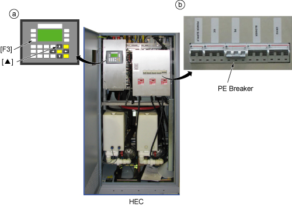
Disconnect the cables on the front of the Dual Drive RF Amp, and disconnect the coolant lines.
Illustration 8: Disconnect Cables and hoses
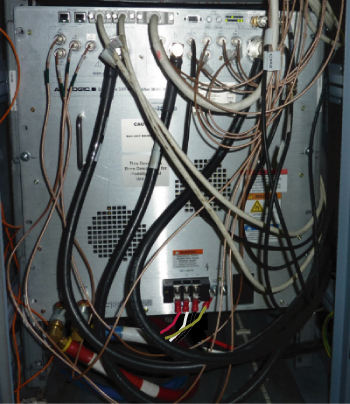
Label the failed cable as “defective”.
Carefully move the cables and lines to the side of the cabinet, allowing the surrounding area to be free from any obstruction of movement for when the amplifier will be pulled out. (Shown below.)
Illustration 9: Coolant Lines Placement
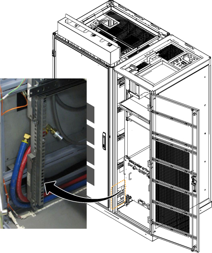
Unscrew the six attachment screws (shown below).
Illustration 10: Dual Drive RF Amp Attachment Screws
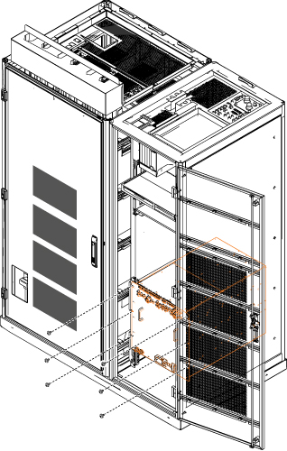
Using the two front handles, carefully slide out the Dual Drive RF Amp unit.
Illustration 11: Slide Out Dual Drive RF Amp
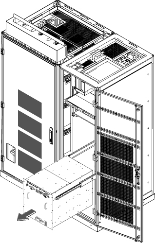
Set up the Service Platform in front of the PGR Cabinet over the RF Amp.
| NOTE: | Verify that safety rails are in place prior to using the Service Platform. |
Using an adjustable wrench, remove body and head transmission lines from the plate at the top of the PGR Cabinet (shown in Illustration 12), and place out of the way.
Remove plate shown in Illustration 12 by loosening 4 thumb screws.
Disconnect the defective cable from Bulkhead IF Connector.
Illustration 12: Disconnect the Bulkhead IF Connector
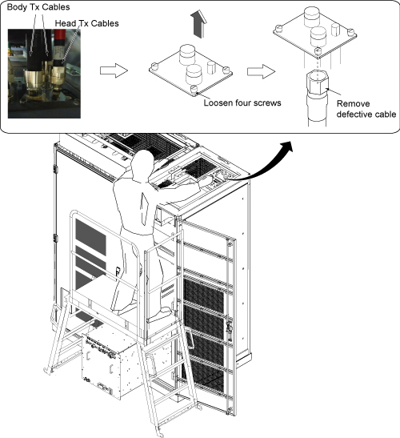
Label the failed cable end as “defective”, then coil and secure with tie wrap at the rear of the cabinet.
Illustration 13: Defective Cable management
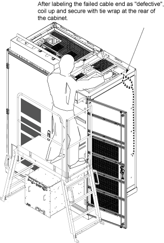
From the top of PGR Cabinet, route end of cable with 90 degree connector into the cabinet so that it passes though the Cabinet rear opening area to the bottom.
Illustration 14: Cable routing
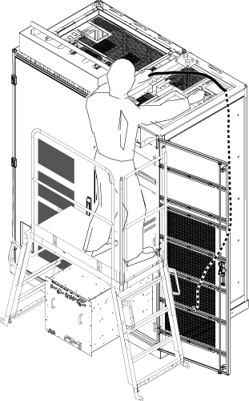
Connect RF Transmit cables to the bottom of cabinet IF plate, restore cabinet IF on the top of the cabinet, and restore Tx Cables to the top of the cabinet.
Illustration 15: Restore Cables to the plate
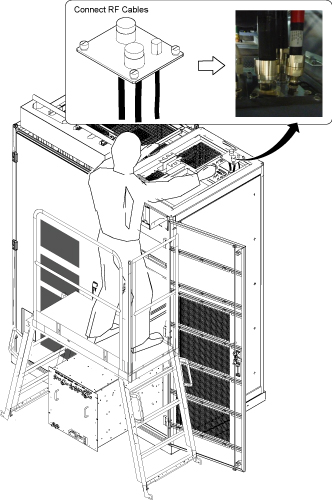
Remove the Service Platform.
Fix the newly routed cable to the rear of Cabinet by tie wrap.
Illustration 16: Fix cable by Tie Wrap
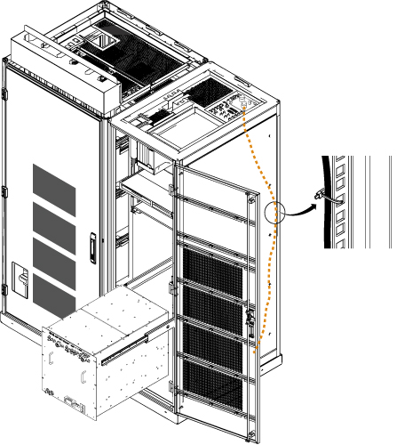
Route the cable with 90 degree connector under the RF Amp to the front.
Illustration 17: Cable Routing
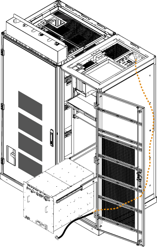
Coil excess of failed cable with “defective” label into a loop, secure, and position under RF Amp.
Illustration 18: Coil excess of failed cable
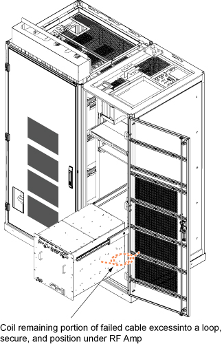
Slide the Dual Drive RF Amp into the cabinet completely and fix it with 6 screws.
Reconnect the remaining cables and coolant lines to the Dual Drive RF Amp.
Restore CAM Chassis.
Restore the power using Lockout / Tagout of PGR PDU / Gradient Subsystem.
Go to Finalization ( Finalization, Step 1).
Perform DD Quadrature calibration.
Perform head and body scan.